Howto: xCode 5 and SDL 1.2
If you haven't SDL 1.2 already, download it from https://www.libsdl.org/download-1.2.php:
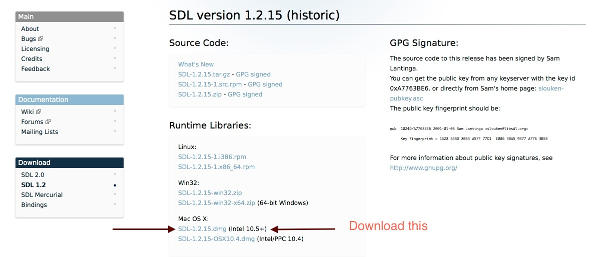Next, create in xCode your new project. Choose "Command Line Tool" as the template type:

Give any name for you project.
Open the downloaded SDL-1.2.15.dmg and drag'n'drop SDL.framework from the dmg archive to your project:
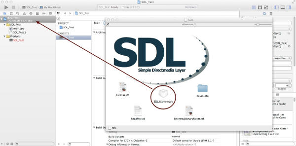Choose the following options on the windows that will pop up:
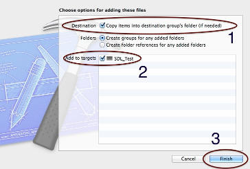Next open the subdirectory devel-lite in the dmg archive and likewise drag'n'drop SDLMain.h and SDLMain.m to your project:
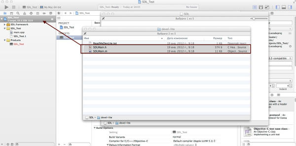Now, select your project in the navigator in xCode, select your project's name in Targets and go to Build Phrases to add a new library to be linked:
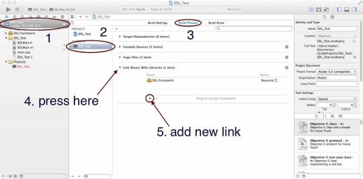Choose Cocoa.framework to be linked:
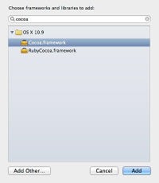Next, open SDLMain.m in your project and include "SDL/SDL.h" instead of "SDL.h":
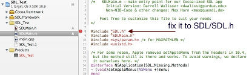Select main.cpp and replace it with this main.cpp.
Important step: Open the sidebar when viewing main.cpp...
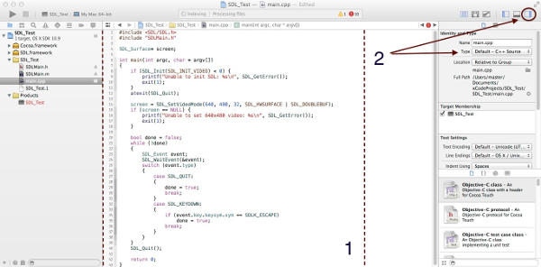... and change the type of file from Default - C++ Source to Objective-C++ Source:
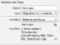Important step: Go to project menu again and add "--fno-objc-arc" as a compiler flag for SDLMain.m:

Resulting in this:
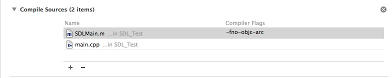Now you should be ablte to compile and run your SDL project! Your project's build settings should look like this:
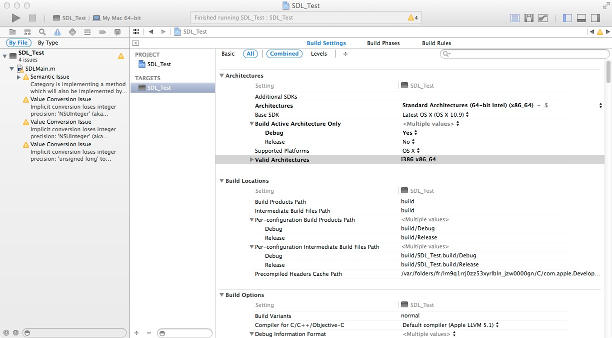